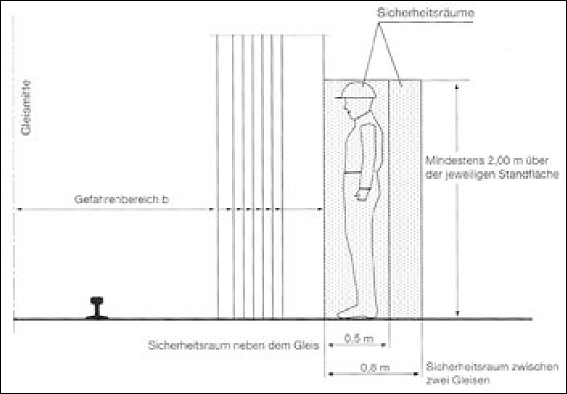
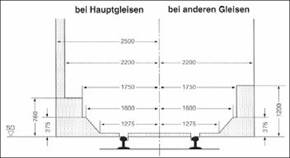

| Geschwindigkeit bis zu … [km/h] |
40 | 50 | 70 | 90 | 120 | 140 | 160 | 280 |
| Gefahrenbereich b [m] ab Gleisachse **) |
1,85 *) | 2,0 | 2,10 | 2,20 | 2,30 | 2,40 | 2,50 | 3,00 |
| *) Nur zulässig bei Arbeiten von bis zu drei Versicherten gemäß [GUV-V D 33 [15], § 6 (1)], vgl. Kap. 5. **) Die angegebenen Maße berücksichtigen nicht das Verkehren von Lademaßüberschreitungen. |

In dem grau gekennzeichneten Raum dürfen Geräte, Baustoffe und Bauteile nur abgelegt werden, wenn die erforderlichen Sicherungsmaßnahmen getroffen sind (z. B. Sichern gegen Verschieben, Ausschluss von Sendungen mit Lademaßüberschreitungen).